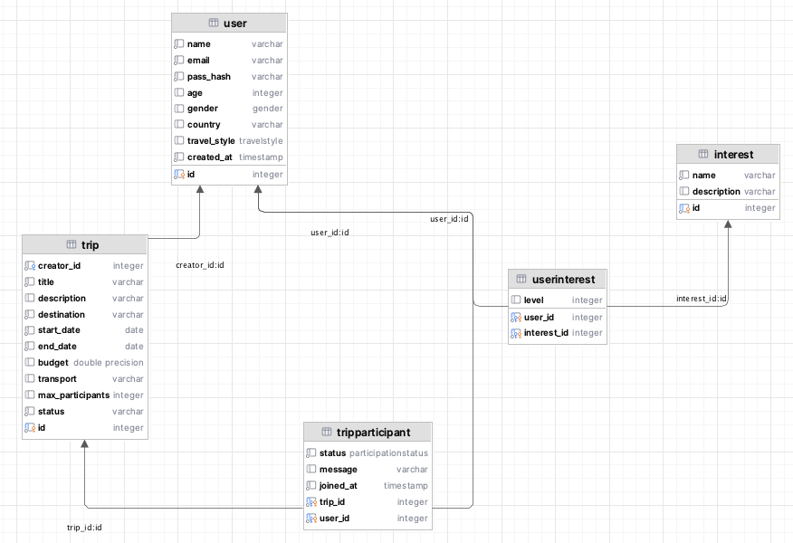
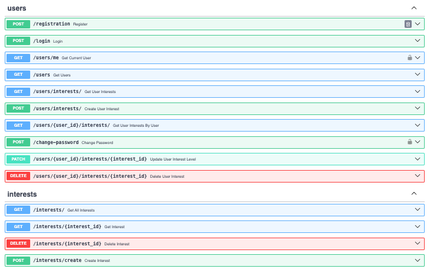
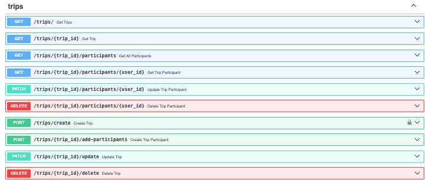
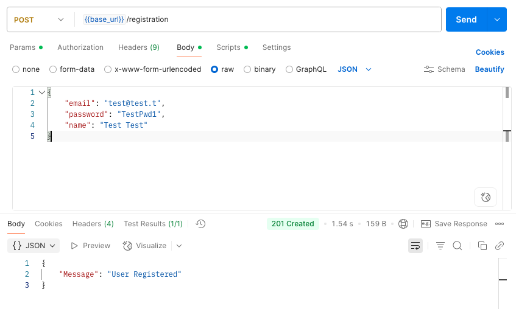
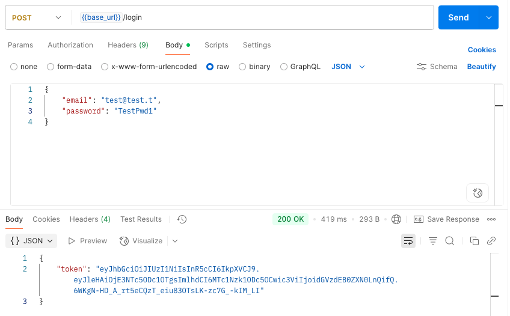

Лабораторная работа 1. Реализация серверного приложения FastAPI
Тема:
Разработка веб-приложения для поиска партнеров в путешествие.
Ход работы:
Схема базы данных:

Модели описаны в файле models.py
from typing import Optional, List
from datetime import date, datetime
from enum import Enum
from sqlmodel import SQLModel, Field, Relationship
# Enums for better usability
class Gender(Enum):
male = "Male"
female = "Female"
other = "Other"
class TravelStyle(Enum):
camping = "Camping"
active = "Active"
cultural = "Cultural"
comfort = "Comfort"
class ParticipationStatus(Enum):
pending = "pending"
approved = "approved"
rejected = "rejected"
# Models
class User(SQLModel, table=True):
id: Optional[int] = Field(default=None, primary_key=True)
name: str
email: str
pass_hash: str
age: Optional[int] = None
gender: Optional[Gender] = None
country: Optional[str] = None
travel_style: Optional[TravelStyle] = None
created_at: datetime = Field(default_factory=datetime.utcnow)
trips_created: List["Trip"] = Relationship(back_populates="creator")
trip_requests: List["TripParticipant"] = Relationship(back_populates="user")
user_interests: List["UserInterest"] = Relationship(back_populates="user")
class Interest(SQLModel, table=True):
id: Optional[int] = Field(default=None, primary_key=True)
name: str
description: Optional[str] = None
users: List["UserInterest"] = Relationship(back_populates="interest")
class Trip(SQLModel, table=True):
id: Optional[int] = Field(default=None, primary_key=True)
creator_id: int = Field(foreign_key="user.id")
title: str
description: Optional[str] = None
destination: str
start_date: date
end_date: date
budget: Optional[float] = None
transport: Optional[str] = None
max_participants: Optional[int] = None
status: str = "active"
creator: Optional[User] = Relationship(back_populates="trips_created")
participants: List["TripParticipant"] = Relationship(back_populates="trip")
class TripParticipant(SQLModel, table=True):
trip_id: int = Field(foreign_key="trip.id", primary_key=True)
user_id: int = Field(foreign_key="user.id", primary_key=True)
status: ParticipationStatus = ParticipationStatus.pending
message: Optional[str] = None
joined_at: datetime = Field(default_factory=datetime.utcnow)
user: Optional[User] = Relationship(back_populates="trip_requests")
trip: Optional[Trip] = Relationship(back_populates="participants")
class UserInterest(SQLModel, table=True):
user_id: int = Field(foreign_key="user.id", primary_key=True)
interest_id: int = Field(foreign_key="interest.id", primary_key=True)
level: Optional[int] = None
user: Optional[User] = Relationship(back_populates="user_interests")
interest: Optional[Interest] = Relationship(back_populates="users")
Подключение к БД в файле connection.py
from sqlmodel import SQLModel, Session, create_engine
DB_USERNAME = "entityfrm"
DB_PASSWORD = "pP3VJsoAcX2q"
DB_HOST = "ep-mute-sun-a2woi1rv-pooler.eu-central-1.aws.neon.tech"
DB_PORT = "5432"
DB_NAME = "web_dev_sem_6"
DATABASE_URL = f"postgresql://{DB_USERNAME}:{DB_PASSWORD}@{DB_HOST}:{DB_PORT}/{DB_NAME}?sslmode=require&channel_binding=require"
engine = create_engine(DATABASE_URL) # , echo=True
def init_db():
SQLModel.metadata.create_all(engine)
def get_session():
with Session(engine) as session:
yield session
API Эндпоинты
Файл user_endpoints.py
from fastapi import APIRouter, HTTPException, Depends
from sqlmodel import Session, select
from starlette.responses import JSONResponse
from starlette.status import HTTP_201_CREATED
from typing_extensions import List
from lab_1.auth.auth import AuthService
from lab_1.db.connection import get_session
from lab_1.model.models.models import User, UserInterest
from lab_1.model.schemas.user import UserCreate, UserLogin, UserRead, UserPasswordChange
from lab_1.model.schemas.user_interest import UserInterestRead, UserInterestCreate
from lab_1.repos.user_repos import select_all_users, find_user
user_router = APIRouter()
auth_handler = AuthService()
# ------ AUTH ------
@user_router.post('/registration', status_code=201, tags=['users'],
description='Register new user')
def register(user: UserCreate, session=Depends(get_session)):
users = select_all_users()
if any(u.email == user.email for u in users):
raise HTTPException(status_code=400, detail='Email is taken')
hashed_pwd = auth_handler.get_password_hash(user.password)
print(f'hashed_pwd: {hashed_pwd}')
u = User(email=user.email, pass_hash=hashed_pwd, name=user.name)
session.add(u)
session.commit()
return JSONResponse(status_code=HTTP_201_CREATED, content={"Message": "User Registered"})
@user_router.post('/login', tags=['users'])
def login(user: UserLogin):
user_found = find_user(user.email)
if not user_found:
raise HTTPException(status_code=401, detail='Invalid email and/or password')
verified = auth_handler.verify_password(user.password, user_found.pass_hash)
if not verified:
raise HTTPException(status_code=401, detail='Invalid email and/or password')
token = auth_handler.encode_token(user_found.email)
return {'token': token}
# ------ GET ------
@user_router.get('/users/me', tags=['users'])
def get_current_user(user: User = Depends(auth_handler.get_current_user)):
return user
@user_router.get("/users", response_model=List[UserRead], tags=['users'])
def get_users(session: Session = Depends(get_session)):
return session.exec(select(User)).all()
@user_router.get("/users/interests/", response_model=List[UserInterestRead], tags=['users'])
def get_user_interests(session: Session = Depends(get_session)):
return session.exec(select(UserInterest)).all()
@user_router.get("/users/{user_id}/interests/", response_model=List[UserInterestRead], tags=['users'])
def get_user_interests_by_user(user_id: int, session: Session = Depends(get_session)):
return session.exec(select(UserInterest).where(UserInterest.user_id == user_id)).all()
# ------ POST ------
@user_router.post("/change-password", tags=['users'])
def change_password(
data: UserPasswordChange,
session: Session = Depends(get_session),
current_user: User = Depends(auth_handler.get_current_user)
):
if not auth_handler.verify_password(data.old_password, current_user.password):
raise HTTPException(status_code=400, detail="Incorrect old password")
current_user.pass_hash = auth_handler.get_password_hash(data.new_password)
session.add(current_user)
session.commit()
return {"message": "Password updated successfully"}
@user_router.post("/users/interests/", response_model=UserInterestRead, tags=['users'])
def create_user_interest(data: UserInterestCreate, session: Session = Depends(get_session)):
db_interest = UserInterest.model_validate(data)
session.add(db_interest)
session.commit()
session.refresh(db_interest)
return db_interest
# ------ PATCH ------
@user_router.patch("/users/{user_id}/interests/{interest_id}", response_model=UserInterestRead, tags=['users'])
def update_user_interest_level(user_id: int, interest_id: int, level: int, session: Session = Depends(get_session)):
relation = session.get(UserInterest, (user_id, interest_id))
if not relation:
raise HTTPException(status_code=404, detail="UserInterest not found")
relation.level = level
session.add(relation)
session.commit()
session.refresh(relation)
return relation
# ------ DELETE ------
@user_router.delete("/users/{user_id}/interests/{interest_id}", response_model=dict, tags=['users'])
def delete_user_interest(user_id: int, interest_id: int, session: Session = Depends(get_session)):
relation = session.get(UserInterest, (user_id, interest_id))
if not relation:
raise HTTPException(status_code=404, detail="UserInterest not found")
session.delete(relation)
session.commit()
return {"ok": True}
Файл trip_endpoints.py
from fastapi import APIRouter, Depends, HTTPException
from sqlmodel import Session, select
from typing import List
from lab_1.db.connection import get_session
from lab_1.model.models.models import Trip, User, TripParticipant
from lab_1.model.schemas.trip import TripCreate, TripRead, TripUpdate
from lab_1.auth.auth import AuthService
from lab_1.model.schemas.trip_participant import TripParticipantCreate, TripParticipantRead, TripParticipantUpdate
trip_router = APIRouter()
auth_handler = AuthService()
# ------ GET --------
@trip_router.get("/", response_model=List[TripRead])
def get_trips(session: Session = Depends(get_session)):
return session.exec(select(Trip)).all()
@trip_router.get("/{trip_id}", response_model=TripRead)
def get_trip(trip_id: int, session: Session = Depends(get_session)):
trip = session.get(Trip, trip_id)
if not trip:
raise HTTPException(status_code=404, detail="Trip not found")
return trip
@trip_router.get("/{trip_id}/participants", response_model=List[TripParticipantRead])
def get_all_participants(trip_id: int, session: Session = Depends(get_session)):
return session.exec(select(TripParticipant).where(TripParticipant.trip_id == trip_id)).all()
@trip_router.get("/{trip_id}/participants/{user_id}", response_model=TripParticipantRead)
def get_trip_participant(trip_id: int, user_id: int, session: Session = Depends(get_session)):
participant = session.get(TripParticipant, (trip_id, user_id))
if not participant:
raise HTTPException(status_code=404, detail="Participant not found")
return participant
# ------ POST ------
@trip_router.post("/create", response_model=TripRead)
def create_trip(
trip: TripCreate,
session: Session = Depends(get_session),
current_user: User = Depends(auth_handler.get_current_user)
):
db_trip = Trip(**trip.model_dump(), creator_id=current_user.id)
session.add(db_trip)
session.commit()
session.refresh(db_trip)
return db_trip
@trip_router.post("/{trip_id}/add-participants", response_model=TripParticipantRead)
def create_trip_participant(trip_id: int, data: TripParticipantCreate, session: Session = Depends(get_session)):
participant = TripParticipant(
trip_id=trip_id,
user_id=data.user_id,
message=data.message
)
session.add(participant)
session.commit()
session.refresh(participant)
return participant
# ------ PATCH ------
@trip_router.patch("/{trip_id}/update", response_model=TripRead)
def update_trip(trip_id: int, update: TripUpdate, session: Session = Depends(get_session)):
trip = session.get(Trip, trip_id)
if not trip:
raise HTTPException(status_code=404, detail="Trip not found")
update_data = update.model_dump(exclude_unset=True)
for key, value in update_data.items():
setattr(trip, key, value)
session.commit()
session.refresh(trip)
return trip
@trip_router.patch("/{trip_id}/participants/{user_id}", response_model=TripParticipantRead)
def update_trip_participant(trip_id: int, user_id: int, update: TripParticipantUpdate, session: Session = Depends(get_session)):
participant = session.get(TripParticipant, (trip_id, user_id))
if not participant:
raise HTTPException(status_code=404, detail="Participant not found")
update_data = update.model_dump(exclude_unset=True)
for key, value in update_data.items():
setattr(participant, key, value)
session.commit()
session.refresh(participant)
return participant
# ------ DELETE ------
@trip_router.delete("/{trip_id}/delete", response_model=dict)
def delete_trip(trip_id: int, session: Session = Depends(get_session)):
trip = session.get(Trip, trip_id)
if not trip:
raise HTTPException(status_code=404, detail="Trip not found")
session.delete(trip)
session.commit()
return {"ok": True}
@trip_router.delete("/{trip_id}/participants/{user_id}", response_model=dict)
def delete_trip_participant(trip_id: int, user_id: int, session: Session = Depends(get_session)):
participant = session.get(TripParticipant, (trip_id, user_id))
if not participant:
raise HTTPException(status_code=404, detail="Participant not found")
session.delete(participant)
session.commit()
return {"ok": True}
Файл interest_endpoints.py
from fastapi import APIRouter, Depends, HTTPException
from sqlmodel import Session, select
from typing import List
from lab_1.db.connection import get_session
from lab_1.model.models.models import Interest, UserInterest
from lab_1.model.schemas.interest import InterestRead, InterestCreate
from lab_1.model.schemas.user_interest import UserInterestRead, UserInterestCreate
interest_router = APIRouter()
user_interest_router = APIRouter()
# ------ GET ------
@interest_router.get("/", response_model=List[InterestRead])
def get_all_interests(session: Session = Depends(get_session)):
return session.exec(select(Interest)).all()
@interest_router.get("/{interest_id}", response_model=InterestRead)
def get_interest(interest_id: int, session: Session = Depends(get_session)):
interest = session.get(Interest, interest_id)
if not interest:
raise HTTPException(status_code=404, detail="Interest not found")
return interest
# ------ POST ------
@interest_router.post("/create", response_model=InterestRead)
def create_interest(interest: InterestCreate, session: Session = Depends(get_session)):
db_interest = Interest.model_validate(interest)
session.add(db_interest)
session.commit()
session.refresh(db_interest)
return db_interest
# ------DELETE ------
@interest_router.delete("/{interest_id}", response_model=dict)
def delete_interest(interest_id: int, session: Session = Depends(get_session)):
interest = session.get(Interest, interest_id)
if not interest:
raise HTTPException(status_code=404, detail="Interest not found")
session.delete(interest)
session.commit()
return {"ok": True}
Эндпоинты в Swagger


Пример регистрации и логина в Postman

